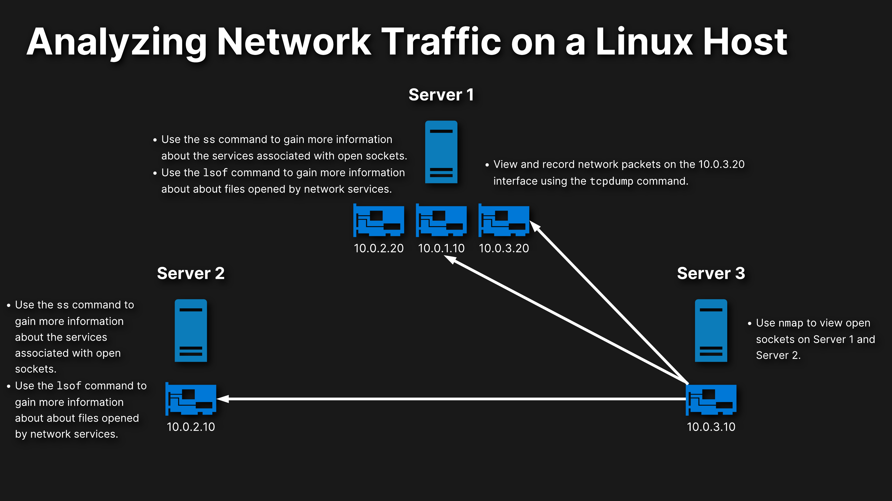

LAB: Analyzing Network Traffic on a Linux Host

In this scenario, you’re a linux administrator for a small company and have been tasked with analyzing the network traffic and availability on your data center.
The first thing you need to do, is to log into server 3 and scan for open ports on server 1 and server 2 using the nmap command. Once the open sockets have been discovered, you will need to login into your server 1 and server 2 to further investigate the services that are running on these ports. This includes using the ss command to view process names and IDs and using the lsof commands, to view the files that have been opened by the services, and then save your finginds to files on the host.
Lastly on server 1, you will need to perform a packet capture, for the 10.0.3.20 interface, and save it to a file for your records. You can store the contents to a file called in the /root directory.
This is what will do for this introduction video and hope you guys have a lot of fun on this one and good luck.
Note:
- All tasks should be performed as the root user.
- All the utilities needed have been installed.
- These servers accesses and login will be provided once requested through slack.
Learning Objectives
Scan for Open Ports on Server 1 and Server 2
- On Server 3, use the nmap command to scan for open TCP ports on Server 1 and Server 2.
- On Server 3, use the nmap command to scan for open UDP ports on Server 1 and Server 2.
- On Server 3, use the nmap command to scan for open TCP ports and provide OS and version information on Server 1 and Server 2.
- On Server 3, use the nmap command to scan for open UDP ports and provide OS and version information on Server 1.
Analyze the Listening Sockets on Server 1 and Server 2
- On Server 1, use the ss command to view open TCP and UDP sockets that were discovered by the nmap command.
-
On Server 1, view the open files for each service discovered by the nmap command and record the totals to a file (the file should be named after the service that the count is for).
-
On Server 2, use the ss command to view open TCP sockets that were discovered by the nmap command.
- On Server 2, view the open files for each service discovered by the nmap command and record the totals to a file.
Perform a Packet Capture of the 10.0.3.20 Interface on Server 1
- On Server 1, determine which interface has the 10.0.3.20 address and list the interfaces available for use with the
tcpdumpcommand. - On Server 1, use the
tcpdumpcommand to record 5 packets from the 10.0.3.20 interface and save it to a file called 10-0-3-20.pcap. Then, view its contents.